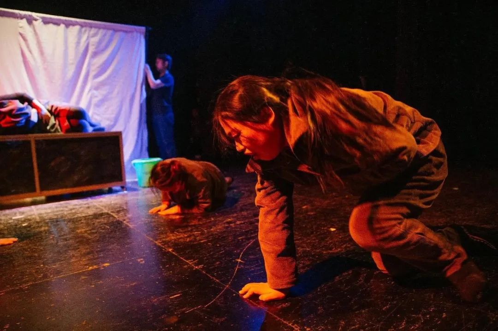
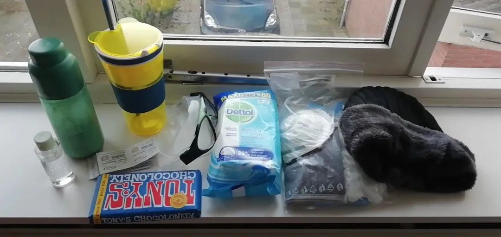
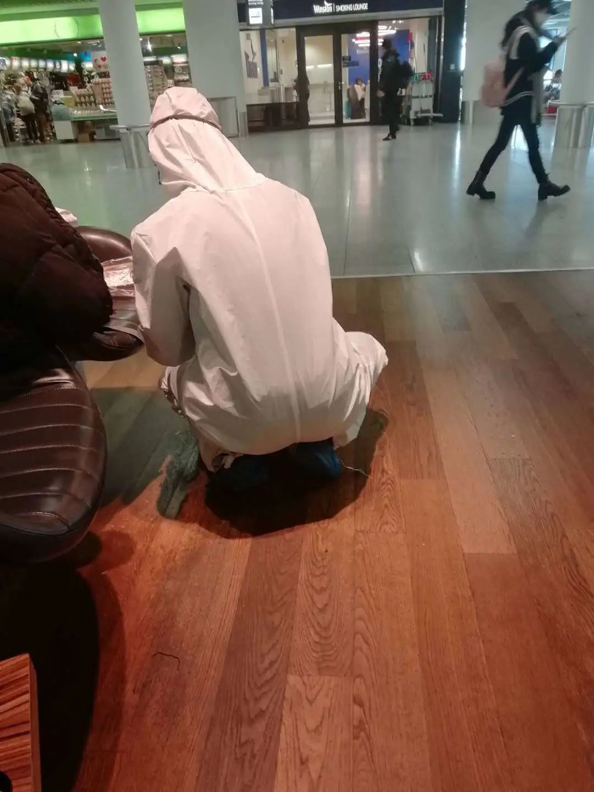
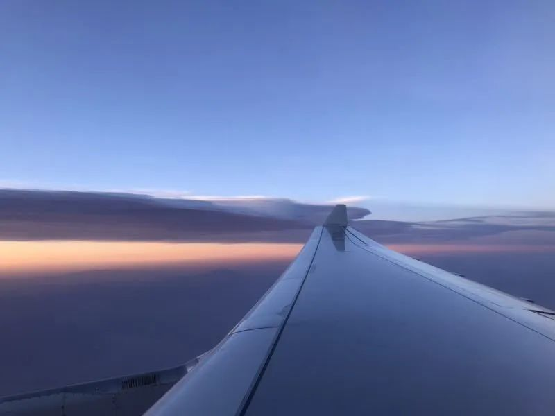

中国留学生“疫”中归国记：我们为什么回来
原文链接 备份链接 中午时分伦敦Tesco超市的牙膏架 拍摄：高山清 记者：田思奇 王磬 编辑：曾宇 “ 直到登机，一些被迫回国的同学仍在犹豫是走是留。落地后的检疫和隔离安排很细致，不少同学表示不想连累家人，即便没有强制政策，也会申请集中 …

中央戏剧学院戏文系教授赵志勇，受邀于1月中旬飞赴荷兰，原计划的访学和文化交流历时约3个月。没想到一个月来欧洲迅速陷入疫情漩涡，他原定参加的艺术节取消，所在的大学关闭停课，处境焦灼。
3月17日，他历时23小时回到北京，接受集中隔离。
以下是他归国旅程的自述和感悟。
···············
❶
***“意大利离咱们这儿远着呢”***
1月中旬，我出发前往荷兰乌特勒支。乌特勒支大学人文学院传播系的尤金·范·厄文教授，是研究社区剧场的知名学者，也是荷兰鹿特丹国际社区艺术节的艺术总监，我对他仰慕已久。此次承蒙他邀请前往乌特勒支大学从事访问学者研究，因为忙于学校的教学科研工作一直拖延未能前往。好不容易等到春节假期，我迫不及待做好签证买好机票，抵达了美丽的风车之国。

中戏教授赵志勇与邀请他赴荷兰访学的尤金教授的合影
想不到离开之后没多久，国内新型冠状肺炎疫情开始猛烈爆发。网上传来的各种信息令人无比揪心。每天工作之余紧张关注着国内疫情的进展，心情一而再地跌入谷底。好在荷兰的朋友们给了很大支持，中国疫情第一次被荷兰当地电视台报道之后，很多刚结识的朋友纷纷给我发信息和邮件慰问，问我家人朋友是否安好。人文研究中心主任Frank每天在办公楼碰到我，都会问一句：“怎么样，家里都还好吧。”学校给亚裔师生发声援邮件，表示会支持大家对抗种族主义的歧视言行，我这个刚来没多久的短期访问学者也收到了。一切让我感觉很暖。
疫情的到来让国内学校纷纷推迟开学，国内单位通知我预期开学时间是5月10日。于是病毒居然以意想不到的方式成全了我的心愿，我终于能够在荷兰多呆一段时间，深入考察这里的社区艺术了。
我将之前的机票改期，正式跟尤金确认可以参加三月底的2020鹿特丹国际社区艺术节。尤金非常兴奋地给我安排了两场工作坊。他知道我在北京带一个流动人口社区的女工戏剧小组，而且做了一出叫做《生育纪事》的社区记录剧场作品。他告诉我，中国的社区剧场是欧洲研究者们从未涉足而又无比好奇的领域。他期待我能在艺术节分享自己的工作经验。

赵志勇带领学生与北京木兰花开社工服务中心共同完成的记录剧场作品《生育纪事》 摄影|李昊
我担忧自己在国内的家人朋友，也庆幸自己在这段艰难的日子里可以安全地从事研究工作。谁能想到，事情会在短短几周之后彻底翻转。
大概从二月中下旬开始，荷兰的媒体上开始出现了关于意大利疫情的报道。有一天晚上，我和房东、荷兰社区艺术家多娜·丽莎，以及她的丈夫、在乌特勒支应用技术大学教授剧场与社会工作课程的古纳·谷汶一起吃晚饭，电视新闻里正在播报意大利疫情的情况。我问道：“意大利离咱们这儿是不是不远啊？”古纳说：“远着呢。荷兰南边是比利时、德国和瑞士，然后才到意大利。”我笑着说：“那就希望病毒永远都不要到北边来吧。”
没想到，过了不到一周，新型冠状病毒跟荷兰开始联系上了。最初是以谣言的方式。有天晚上，我在楼下看书，多娜在楼上画画，我收到在乌特勒支大学留学的学生英茹发来的信息，是一张截图，上面有荷兰权威媒体NOS的logo，说第一例确诊病例已经出现在乌特勒支北部的移民社区OVERECHT，警察已经封锁了该区的街道。OVERECHT是多娜主持的STUT社区戏剧中心所在地，我赶紧冲上阁楼把收到的消息递给她看。我俩面面相觑。我问她：你明天还去上班么？她说：不去不行吧。第二天，我收到多娜从STUT发来的信息，告诉我昨晚的信息已被确认为假新闻。我松了口气。那种安全的感觉又回来了。
❷
***唯一的口罩被我戴了洗，洗了戴***
事实证明，这种感觉是虚幻的。2月23日是荷兰狂欢节大游行的日子。因为之前来讲学的英国社区剧场研究学者Tim Prenkti，在他的社区艺术课程里讨论过欧洲狂欢节传统与社区艺术的内在渊源，尤金安排选课的同学2月23日前往南部的蒂尔堡参加复活节游行。我也报了名准备前往。
23日一早，今年来自北海的第三轮风暴过境，狂风暴雨使得狂欢节组织者不得不取消了游行。我和英茹也因为恶劣的天气放弃了行程。没想到这是一个幸运的决定，因为后来公布的荷兰头七例确诊病例中，有三例是在蒂尔堡狂欢节感染的。蒂尔堡所在的荷兰南部也一直是荷兰确诊病例最多、疫情最严重的地区。
意大利公布第一例确诊病例之后，本地的中国留学生群里已经开始彼此提醒要小心，身边欧洲人民对疫情毫不在意的态度也成了大家吐槽的焦点。而欧洲政治文化中对于蒙面的反感和排斥，也让想要戴口罩保护自己的华人留学生心存顾虑。
蒂尔堡狂欢节出现感染的消息传来之后，我中止了每天在人文学院访问学者办公室的工作，改为居家工作学习。实在需要去大学图书馆借书和还书的时候，我都选择晚上人少时段出行。至今还记得第一次戴口罩出行的情形，我戴上了身边唯一的日本买的防雾霾海绵口罩，然后在口罩外面挡上一个围巾，缩在公交车的一个角落里，尽量不惹人注目。后来的日子里，这枚唯一的口罩被我戴了洗，洗了戴。除了心理安慰之外，不知道还有什么作用。没办法，在这里想买个口罩太难了。不仅没有口罩，连超市里的免洗洗手液和含酒精成分的消毒巾都在二月中旬就全部售罄。

乌特勒支大学图书馆门前
为了让我有机会跟当地的社区艺术家深入接触，尤金给我安排了两个接待家庭。3月1日我离开多娜夫妇，搬进老一代社区艺术实践者、乌特勒支戏剧学院前院长廉·斯普棱格尔夫妇家里。斯普棱格尔夫妇都是年近八十的老人，身板硬朗敏捷，每天忙忙碌碌，上下楼梯迅捷如风。欧洲那种近百年历史的老房子，楼梯狭窄陡峭，连我下楼都要小心翼翼。不知道他们如何能做到偌大年纪腿脚那么灵便。

多娜夫妇家外的景色
我入住之前，他们刚从布鲁塞尔开会回来，老先生旅途中患了感冒，一边用手帕擤着鼻涕一边带我参观房间。第二天他身体不支终于卧床了。搞得我胆战心惊。我提醒廉的夫人叠妮克，这个时候患感冒非同小可，一定多加小心。她豪迈地大手一挥：“没事，别担心。我都不怕，你怕啥。新闻说了，像你这样的年轻人，即便是感染了这个病毒，也不会有事的。”令我无言以对。
廉夫妇的房子在市中心的一片大公园里，前后有运河的两条分岔河道流过，周围都是数百年历史的古老建筑和教堂。窗前的教堂钟楼每半个小时敲一次钟，早晨和傍晚钟声响亮悦耳，其余时间则温柔轻灵，就像是社区里的一个大型八音盒玩具。春天到来，门前公园繁花似锦风光明媚，从早到晚跑步遛狗散步的人络绎不绝。孩子们已经开始迫不及待地在运河里划划艇。生活在这样的环境里，人会天然地产生一种安全感。如果不是因为了解国内之前发生的一切，此刻的我也很难想象病毒正在威胁人类的生活。这样一派安宁祥和让我很焦虑，因为我能感觉到，在病毒面前，这里的人民确实没有准备好。

房前房后有运河的分岔河道流过，旁边是很大的公园
3月11日，我收到荷兰国立歌剧芭蕾舞团发来的邮件。邮件是荷兰文写的，我请廉帮我翻译。他看完之后告诉我：“你买了3月19日伊沃·范·霍夫导演的布莱希特歌剧《马哈哥尼城的兴衰》，剧院告诉你当天傍晚有自助餐会，你愿意的话可以花三十欧，去吃演出前的自助餐。”真是令人匪夷所思！我瞪大了眼睛问：“怎么会这样？我还以为是通知我要取消演出呢。”廉奇怪地看了我一眼：“为什么要取消演出？”“因为病毒啊！”廉耸耸肩：“你太焦虑了。这样吧，你要是不想去的话明晚之前告诉我，我帮你把票转出去。这个票现在根本买不到了，肯定很多人想去看的。”

乌特勒支的圣马丁游行，欧洲最著名的社区民众艺术活动之一，创始人是第二任房东廉
第二天下午，廉上楼敲我门。我打开门，他声音颤抖地告诉我：“刚才的突发新闻，政府取消了所有一百人以上的集会活动。你的演出也被取消了。”我俩面面相觑，一时无言。
❸
***往日像八音盒一样温柔的教堂钟声***
***突然报警声大作***
接下来的形势发展令人猝不及防。傍晚，尤金给我发了信息，通知我月底的国际社区艺术节也被取消了。这是尤金退休之前主持的最后一届艺术节。为筹办这个艺术节，他已经忙碌了两年，投入了无数的时间、精力和资金。艺术节被取消，这一切都将付诸东流。我战战兢兢地问他：“有没有可能推迟到疫情结束之后办？”他绝望地回答：“志勇，不可能。我们的经费已经花完了。所有花出去的机票、酒店和人力资源经费都是退不回来的。我们不可能再办一次了。”疫情面前，像这样遭受灭顶之灾的企业和文化艺术机构，全球不知道有多少！
就在一周之前，芬兰航空通知我四月底之前所有飞中国大陆的航班都取消了。我只能申请退票，重新买了4月9日的回国机票。然而，艺术节被取消了，欧洲疫情日益严重，我的旅游保险和申根签证将先后到期。一旦疫情导致社会动荡甚至边境关闭，没有医疗保障甚至旅欧签证的我将会裸奔在巨大风险中。（实际上，在我写下这些文字的时候，房东多娜给我发来信息，告诉我比利时、德国和荷兰等国正式关闭边境，所有人员只能离境，不能入境。）我跟学生英茹商量了一下，告诉她我会提前回国。也建议她尽快跟学校沟通，把课程和学业处理一下，然后回国。
把提前回国的想法告诉了尤金，他说会在我走之前找我处理一些事宜。我决定等确定跟他会面的时间之后就购买回国机票。然而，一个国际艺术节的临时取消，有太多的善后工作需要处理。此时阿姆斯特丹直飞中国大陆的所有航班已经停飞，在短短的八个小时里，我眼睁睁看着自己所选中的一个飞行时间最短，中转次数最少的航班，价格从八千多变成了一万九千多。我决定不再等待他通知我会面时间，迅速给自己买下了周一（3月16日），也就是四天之后的回国机票。

廉夫妇家外的景色
因为离别，更因为疫情，每天晚上跟廉和叠妮克把酒畅谈的时光变得伤感和沉重起来。叠妮克开始主动问起我一月份以来武汉、中国到底发生了什么。听完我的介绍后，夫妻俩沉默半晌，叠妮克说：“好，我大概知道形势发展下去，最坏的情况会是怎样了。我们得做好准备。”夫妻俩开始取消所有需外出的工作和活动。第二天中午在楼梯上碰到，叠妮克笑着说：“我注意到你确实是很久没出门了。”我说：“我这个不算什么。在中国大家已经五十多天没出门了。而且绝大多数中国人住狭小的公寓，不是你们这种家里有后院，门前有公园的大房子。”她摇摇头：“难以想象！让我们欧洲人五十多天不出门，中断所有的社交活动，这简直太难了。”想了想她又说：“我决定未来一两个月我们尽量不外出了，一来保护好自己，二来为缓解医疗系统的压力做点贡献。”
在我出发之前倒数第二天，荷兰政府宣布学校停课。头一天，政府宣布所有酒吧、餐厅和咖啡馆不再营业。临走前一天早上，前房东古纳给我打电话，让我住回他家，第二天他开车送我去机场。这样一来避免我坐火车，二来也不必给七十多岁的廉夫妇俩添麻烦。放下电话，我开始收拾行李整理房间。正在忙碌着，忽然不远处的教堂钟声大作，急促响亮的钟声持续了将近十分钟。我停下手里的活儿，推开窗户看着教堂的钟楼，不由得想：这向市民们报警的钟声上一次被人们听到是在何时呢？是二战时德军入侵占领城市的时候么？我们见证了历史，而这历史是如此让人悲伤。经历了这次疫情，或许我们曾经熟悉的某种生活方式将会一去不返。正如廉前一天晚上所说的：他活了77岁，这是他第一次遇到如此糟糕的局面。他所在的社会上一次经历这么严重的状况可能是二战期间。但那时候他太小了，没有记忆。更何况，那毕竟是战争，不一样啊！
尤金终于给我发来了信息，艺术节被取消当天，他忙于处理善后工作直到半夜三点多才坐火车回到家，结果第二天早晨发现自己感冒了。为了避免传染给我，增加我的旅行风险，他建议取消会面。满怀着对这位师长的担忧，我开始面对回国的行程。

距离赵志勇住处只有一二百米的乌特勒支旧的圣马丁教堂。圣马丁是罗马时代一个士兵，因为为人友善仁慈成为基督教圣徒，他最著名的事迹是在一次旅途中遭遇暴风雪，路上看到一个快要冻死的乞丐，他把自己身上的斗篷割下来一半给乞丐取暖。他是乌特勒支市的守护圣徒。门口这尊青铜雕像是圣马丁，他象征这座城市的文化精神：宽容仁爱，帮助弱者。
❹
***机票三万，但实在顾不了那么多***
***只想回家***
买了回国机票以后， 我心情开始平静下来。面临如此巨大的不确定性，当然是回家心里最踏实。更何况，尽管疫情爆发之初疫区传来很多令人无助绝望的消息，但五十多天下来，国内疫情确实控制住了。中国为疫情付出了巨大的牺牲和代价，但也最早迎来了抗击疫情胜利的前景。此刻回国，安全绝对是有保障的。
此次回国，旅费花销可谓惊人，芬兰航空的退票申请邮件发出一周依然音讯全无。之前花8000多人民币买的4月9日回国机票，查了一下现在退票只能得到199块钱。而3月12日买的阿姆斯特丹中转法兰克福飞北京首都机场的机票，票价19000多。全部算下来这一趟国际旅行的花费已经三万多了。但实在顾不了那么多了，此时只想回家。
英茹也迅速处理了学校的事情，买了比我晚三天回国的机票。我们开始一起准备回国的防护物资。我的防护物资如下：3M口罩1个，普通医用口罩4个，一次性手套15双，消毒巾和消毒棉片若干，帽子，充当护目镜用的普通泳镜，免洗洗手液一小瓶。
都说机上尽量不要吃喝不要上卫生间，可是十五小时的飞行不吃不喝撑不住。还好我事先准备了代餐粉，又买了吸管杯，这样就算吃饭也可以不摘口罩了。为防止代餐粉被安检没收，也准备了应急充饥的巧克力和高蛋白能量棒。

为回国准备的防护物资和食品
在荷兰呆的时间如此短暂又不懂当地语言，疫情来得突然，根本不可能自己去准备这些物资。口罩和消毒棉片是英茹给的，护目镜、巧克力和能量棒是古纳给的。叠妮克之前在ETOS超市短暂恢复消毒液供应的时候抢到了一大瓶免洗洗手液，听说我和英茹要回国，主动提出给我们一人分装一小瓶路上用。异国他乡，危难之时，能够得到这样的支持和帮助，心里满满的都是感动。
回到多娜夫妇家，多娜准备了我喜欢的食物为我送别。晚上躺在床上，想象这两个月以来的经历，心绪起伏难以入眠。早晨起身打开手机，收到英茹半夜发来的信息。她说亲友帮她托人在航空公司内部查了她的机票，发现第二程慕尼黑飞北京的汉莎航空航班被取消了。但因为各大航空公司目前都处于接近崩溃的状态，因此航班取消的消息并未在汉莎官网和购票网站出现。她在物色新的回国航班，也建议我把自己的航班号告诉她，帮我查询一下，确定航班正常再出发。
我不由想到了最坏的可能性。如果未来几个小时之内我的后程航班被取消，而荷兰和德国国境关闭的话，我将会滞留在举目无亲的法兰克福，进退无路。好在经过查询，确认了LH993和CA932都正常飞行。我终于可以出发了。
❺
***欧洲空乘连口罩手套都没有***
***中国乘客穿着防护服登机***
3月16日上午10:55，按照购票网站的提示提前三小时到了机场，却并没遭遇预想中的拥挤和混乱。因为疫情造成大量航班取消，阿姆斯特丹机场显得空空荡荡。值机和安检根本没有人排队，连测体温的程序都没有。不到半小时，我已经办完所有手续，走到了自己的登机口。
唯一一场虚惊是在汉莎的值机柜台，值机工作人员问我：“你知道你会被隔离十四天吗？”我被吓呆了：“什么？德国也开始隔离中转旅客了吗！”“没有，是在你自己家。”终于松了一口气，赶紧告诉她：“哦哦，知道。谢谢你告诉我。”
可能因为最近几天的意外和惊吓太多，对身边各种意外和不确定因素变得格外敏感。在登机口的躺卧休息区找了个位置刚要躺下，听着旁边一位大叔睡得很沉，呼吸还有点沉重，心里立刻不踏实，赶紧换到僻静无人的地方呆着。登机前半小时，进餐、排泄。消耗了第一双一次性手套和第一包消毒片。太过小心翼翼，居然蠢到在摘手套之前拿消毒棉片去给机票消毒，结果票面一片模糊。
阿姆斯特丹飞法兰克福的这个航班上座率不到一半。除了人少，其他一切照旧。空乘人员连口罩手套都没有。机上发了一次饮料，酒水需要收费。点酒的乘客不少。遇到点酒的乘客，空姐笑嘻嘻地从乘客手里收钱、找零，或者刷卡，然后给他们倒酒。让我看在眼里，无比揪心。万一乘客里有人感染了病毒，这机组人员的风险得有多大啊！到了法兰克福机场，发现比阿姆斯特丹机场人还少，除了飞北京、上海的登机口，其他地方基本没人。欧洲最大的国际航空枢纽居然这么空空荡荡，简直令人震惊。可以想见疫情对全球经济的打击程度。
到了机场和飞机上，戴口罩的乘客终于多起来了。不光有亚洲人，也有欧美人。但显然欧美人民不太习惯戴口罩，一路最少看见四五个人，口罩都戴反了。最可怜的是机场的工作人员和机上的空乘人员，在人流如此密集，感染风险如此高的地方工作居然没有任何防护。究竟是他们的雇主认为疫情不严重，还是他们的国家防护物资不足？
在阿姆斯特丹办完值机去安检的时候，与一个负责回答旅客问询的年轻工作人员擦身而过，那一瞬间发觉小伙子在留意我的口罩，眼神里平静中似乎还有些困惑和无奈，真让人心疼。
到了国航飞北京、上海两个航班的候机区，画风大变。我到得早，坐下身边还没几个人。但所有人都戴着口罩和一次性手套，甚至护目镜。过一会儿，一位女孩款款走了进来，全身专业防护服，护目镜、3M口罩、一次性手套，甚至还有鞋套。看那一身打扮就好像刚从ICU抢救完重症病人出来的医护工作者。过了一会儿，不断有全套防护装备的同胞抵达。看起来这个航班所有的旅客都比我防护得好，别人防护措施好，那不就意味着我旅途中感染的风险大大降低了么？要知道，荷兰的超市里早就已经买不到消毒巾和免洗洗手液了。二月份和几个留学生朋友在微信群里商议并尝试给武汉捐防疫物资，期间经历的各种波折麻烦让我知道，中国疫情爆发之后在欧洲想买口罩和医用护目镜难于登天。到了现在，欧洲到处的医院都缺防护物资，口罩简直就是奢侈品。

“全副武装”等待飞往中国的乘客
登机之前照旧进食、排泄。更换了口罩和手套。登机之后发现，国航增加了空乘人员的数量，而且空乘人员都戴着口罩、护目镜、手套，甚至穿着专业防护服提供客舱服务。真是令人印象深刻。这样的景观在整个世界航空史上应该都不多见吧。
从登机到落地，期间量了三次体温。第三次测量体温之后，前面机舱到一个小伙子被空乘人员带到了机尾最后一排。动身之前已经听说，机上最后几排是给体温异常的乘客安排的简易隔离区。目睹此景心情难免波动。

身穿防护服为乘客服务的空乘人员
乘客们心情难免不安。而北京疫情防控的相关规定每天甚至每时都在变化。一路上机组空乘人员要安抚乘客的情绪，也要根据形势和防疫规定变化调整应对措施。一路上填了三份入境健康表，一份在线的，两份纸质的。机组人员解释前方有关规定时刻在变，他们也不知道今天入境需要提交的是哪张表。只能建议乘客为了节约下机后的手续时间，把所有可能用到的表格都提前准备好。一遍一遍不厌其烦的解释和说明，至少让我觉得他们应对细致、到位，表现非常专业。
上了飞机，把帽子、口罩、眼罩、耳塞统统穿戴妥当，然后自拍一张发朋友圈，声称自己将会七窍未开一团混沌地睡上八个小时，然后就到家了。17日上午11点多，飞机落地后落地打开手机，给我口罩的英茹小心翼翼地提醒我：“老师，您那个口罩戴反了，过滤孔都露在外面了。”心里一阵抓狂。我这是慌成什么样了！路上还笑话别人口罩反了，结果自己一样犯错啊！
❻
***偷吃卤蛋的小弟***
***收不到验证码的大姐***
其实，在法兰克福机场下机走进候机楼，抬头看见显示屏上CA932客机登机口信息的那一刻，我心情已经彻底放松。大概因为心情变了，再看周遭的事情也发现了其有趣的一面。
大概是因为听说机上有感染风险的缘故，同机乘客大多依旧紧张。飞机进入平飞状态之后，空乘人员开始分发食物。不是通常的盒饭，而是面包、热狗肠、卤蛋、八宝粥、牛奶之类的加工包装食品。连着发了两次，堆了满满一桌子。这个我也事先听说了，为减少空乘和乘客的接触，上机后会一次性发放旅途中所有的食物。我只是不太明白，八个小时的飞行，而且大部分时间是夜间，吃得了这么多么？很多乘客估计事先得到了家人朋友的警告，旅途中不要吃喝，不要使用卫生间。于是发餐的时候，很多旅客第一反应都是冲着空乘人员连忙摆手：“我不要我不要！”那无比紧张的表情，似乎机上服务是来投毒的，而不是来喂食的。而空乘人员自疫情爆发以来显然也有了经验，直接打开小桌板把食物放下，对乘客说：“拿着吧，不要回头可就没得吃了！”经历了飞机落地之后八小时的等待，我才明白，原来他们说的这一“回头”，是十几个小时的时间！

在阿姆斯特丹登机的时候，嘱咐值机柜台给我靠窗的座，结果姑娘还是把我夹在了两个人中间。好在左右两侧都是鲜活生动的人物形象，一路观察他们，乐趣不少。右边窗口是个十八九岁的小弟，一路无话，拿着手机时而追剧，时而打游戏。前面机舱时不时会过来一个比他大几岁、身材很高大的男生，对他发号施令一通。每每发号施令，小弟就点头哈腰地听着。乘务员刚发完餐，大个儿男生气急败坏跑过来了，站在过道里遥指窗口小弟的鼻子，狠狠地威胁道：“不许吃，尤其是那个肠和卤蛋，绝对不能吃，听见没有！”小弟在座椅里吓得缩成一团，连连摆手：“不吃不吃，我不饿我不饿。”
这一幕太奇怪了！过了几个小时该填入境健康表的时候，大哥又过来指手画脚了：把你表给我，这里，你填什么什么，这里，你填什么什么。小弟点头哈腰，一口一个：“好的，老大。”我已经好奇得不行了，这到底是一对什么样的人物关系？黑帮老大和马仔？但这毕竟不是电影啊！于是小弟填表的时候我开始肆无忌惮偷看。小弟一笔字写得张牙舞爪。我仔细辨认半天，认出来他是从芬兰某个我从未听说过的地方回来的。天哪，这到底是干什么的“黑帮”啊？我直接搭讪了。小弟倒是没什么戒心，直接告诉我他是某个冬奥项目出来训练的运动员，而“老大”是他的主教练。原来如此！至于他是哪个项目的，我不能再说了。因为夜里半睡半醒的时候，我不经意间看见小弟趁人不注意，偷吃了那颗绝对不可以吃的卤蛋。
我左边是一位五十出头的大姐。登机之后空姐提示大家手机微信或者支付宝登陆“京心相助”小程序，提前申报个人回国信息。大姐显然从来没听说过有这么回事，一脸懵懂又不好意思问。我看出她为难，主动提示了一下她是怎么回事。大姐掏出手机开始鼓捣“京心相助”。看得出来她眼睛老花，手机举得老远，字体超大。而这个小程序的设计对上了年纪的人显然并不友好。手机字体一放大，那个“同意已上告知信息”的确认按钮就跑到屏幕外面找不着了。我指导大姐调小了手机字体，进入了京心相助小程序。结果大姐的德国手机号码无法接收国内小程序发送的短信验证码。一问才知道，这位青岛大姐在德国呆了八年，为了躲避欧洲疫情，这是她第一次回国，当年申请微信绑定的国内手机号码，早已不知扔到哪里去了。有点替她担心，因为从单位得到的消息，过海关时必须通过“京心相助”查验个人申报信息。跟她说了这个事，大姐倒是不担心：“不怕。我都到了中国的土地上了，还怕个啥？”
大姐穿得挺讲究，但文化程度好像不太高。飞机降落之后她打开手机，收到德国手机运营商发来一条短信。她打开翻译软件准备查德文短信的中文翻译，结果没有网络。于是大姐一手拿着手机和USB数据线，一手指着机上娱乐系统的USB充电口问我：“兄弟，你说我手机插这上头是不是就有网络了？”我告诉她不行，这个只能充电。她“哦”了一声，不再说话了。
一个完全不懂外语的中年妇女，独自在国外生活了八年。连躲避疫情回国的时候都没有旅伴。这位大姐估计是个有故事的人。不过，大姐显然比小弟有城府，对我客气，但始终保持着警惕。一句多余的话也不肯聊。只知道她来自莱茵地区的科隆。问她德国好还是中国好，她毫不犹豫地说：“当然德国好了！你坐飞机去德国，飞机还没降落，空中就看见大片绿油油的森林。你看看这儿，全是光秃秃的。”问她那您想留在德国么？她叹了口气：“嗨，怎么可能，还是得回来啊。”
东北亚农耕和游牧文明交界线上的北京，气候和自然条件当然比不了莱茵河上的科隆那么温润富饶。可万一摊上全球大瘟疫这样的事，留在别人家里确实是扛不过去。接下来没有再和大姐聊天。等到大家都可以下飞机的时候，我一个不留神，大姐已经消失了。不知道她接下来是在北京集中隔离，还是能直接回到青岛。希望阔别八年后，她能和亲人顺利团聚。
❼
***在飞机上等了四个小时***
***意味着下机后一路秩序井然***
飞机落地后一直停留在机场指定区域，所有乘客不能下机。先是地面根据大数据系统分批呼叫旅客下机。估计是为了分流地面健康检疫和过海关的压力。叫了两三拨旅客之后，广播系统不再呼叫。大家陷入焦急漫长的等待。我拿着靠枕和眼罩，到刚离开的乘客空位上躺倒睡觉。不知过了多久，空姐说大家都可以下机了。此时离飞机降落已经将近四个小时。
旅客们下机的时候，空姐们终于撑不住了，两位空姐扶着座椅靠背捶腰，另外几位则瘫坐在自己的座椅上。这趟飞行任务从开始的规划准备到之后执行完成，她们显然经历了太多操心和劳累。这么大的疫情面前，可以想像民航系统的一线空乘人员为保障海外公民平安回国，付出了多少辛苦，承担多大责任。衷心向他们表示感激！
落地之后传来好消息，英茹弄到了当天凌晨南航阿姆斯特丹直飞北京的机票。之前荷兰政府停飞了所有中国大陆到荷兰的航班。经过中方的协商，这个航班刚刚得以恢复。而英茹买到的是当天航班最后一张票。我心里的一块石头落地了。

赵志勇收到留学生英茹在回国航班上拍摄的照片，她说她在荷兰看到最美的天空是在离开的时候
进入机场之后，终于明白了飞机上四个小时的等待意味着什么。从健康检疫到过海关、提取行李，一路秩序井然，顺利畅通。回国之前，有朋友给我发了前两天首都机场入境检疫、海关和转运大巴一片拥堵狼藉的视频，让我做好心理准备。这样的景象没有变成我的亲身经历，显然得益于首都机场调整了流程，让国际到港旅客在飞机上等候，分批次下机。这样一来尽管机上等待的时间漫长，但总好过大家在地面上挤在一起排队。没过多久，我已经顺利过海关，坐上了去新国展转运点的大巴。
❽
***我符合居家隔离条件，***
***但社区拒绝了***
回国之前已经得知，从17日开始所有疫情严重地区回京人员都要集中隔离。通知上也提到老人、孕妇、基础病患者和在北京有固定住所且独居的人士可以申请居家隔离。我符合第二条。到新国展之后，向昌平区防疫部门接待人员说明了情况，他们确认我符合居家隔离条件的，让我跟社区联系征得社区同意。
电话打通，那边接线的是一位女性。她完全没想到有一位从欧洲回来的居民要在社区居家隔离。声音显得很慌乱，颤抖地说要去请示领导，让我等着。可以理解，回国之前我按要求向工作单位报备，所居住的社区肯定不会掌握有关情况。片刻之后一个中年男子打来电话，客客气气让我去集中隔离，不要回来“遭大家白眼”。
我本来是倾向居家隔离的，一来硕士生毕业论文答辩在即，我指导的论文还没看完，二来我教授的本科两个班三门课已经开始网络授课。如果不能回家隔离，那就意味着我无法获得教学和工作所需的书籍资料。此外，我这趟回国总共花费将近三万，集中隔离听说一天费用300-600元不等，我当然希望能够节省一点花费。
单位负责防疫的同事知道我已经回国，也很关心我的情况，不断打电话来，但对我面临的难处她们显然也爱莫能助。最没想到的是，社区把我的情况立刻报给了所在镇政府，镇政府的人马上给我打来电话询问情况。能跟主管社区的上级部门直接沟通，我当然求之不得。跟对方说了我的难处，对方也认真听取了我的表达，说会跟社区协调然后给我通知。
来到转运点之后，注意到有好几位同样符合居家隔离条件的人士被社区拒绝回家。一位大哥和一位姑娘一直在情绪激动地打电话，姑娘在电话里愤怒地表示要投诉市长热线。我心想，这个时候投诉市长热线，应该没什么用吧？而同时，单位同事一直在催我尽快告知隔离地点，他们要上报信息。片刻之后，转运点的工作人员告诉我，经过协商，社区仍不同意我回家隔离，问我是否签字确认集中隔离。我签了字，等待工作人员带领我乘坐去隔离点的大巴。
我想社区有关工作人员应该也有他们的压力，我能理解。更重要的是我真的太累了，只想赶紧歇着。临走之前，向接待我的几位昌平区新国展转运点工作人员道谢。他们工作很辛苦，很尽责，而且在力所能及的范围内，他们是替我着想的。
坐在前往隔离点的大巴上，我浑身无力，意识模糊，面孔灼热。从踏进阿姆斯特丹机场到现在，时间过去了二十三小时。我害怕自己的身体状况会在最后一刻崩溃，挣扎着吃了点东西，用湿巾擦了脸，让自己打起精神。下了车走进隔离酒店大厅，体温测量结果36.2度，我终于踏实下来了。两个月的坚持锻炼、健康饮食和规律作息显然是有用的，否则熬不到最后这一刻我可能已经崩溃了。在首都机场走出机舱的时候，身体感觉不适的乘客被要求向一位检疫官员单独申报。围在检疫官员身边的一群面色或苍白或潮红的旅客，绝大多数看起来都很年轻。
❾
***“关注具体的人，这已经不是共情***
***助人就是救己”***
傍晚七点，我终于入住集中隔离的酒店。之后的14天隔离，将是另外一个故事。跟之前的焦虑、不安、恐惧和一路奔波的辛苦相比，隔离的故事一定是微不足道的。唯一值得一提的，是入住时经历了一点小波折，然后立刻收到了家人的电话，叮嘱我一定要凡事忍耐，夹着尾巴做人。
我哭笑不得地答应了。确实，这一路逃回来，期间得到的关心和照顾令我感恩，从一开始也下定了决心绝不给任何人添麻烦。
身处疫情之中，身边很多人开始不约而同反思个人主义和建构于其上的当代政治经济运作模式。微博知名博主“harps”、从事胚胎发育研究的旅英生物学家就提出质疑：“群体免疫有没有可能成功？这个实验符不符合伦理、值不值得做？看看疟疾、天花、鼠疫、流感、感冒、埃博拉、腮腺炎、登革热、黄热病就知道了。一茬茬人类跟一茬茬病原体共同生活了这么多年，死了这么多人，哪种传染病不是靠疫苗和药物控制住的。能被群体免疫控制住的微生物，就不叫病原体了。”面对疫情，她期待年轻一代的新生力量动员起来保卫自己的社区，在危机中迅速成长。
的确，狭隘和自私不是应对之道，只有团结起来，我们才能战胜危机。我曾教过的一位学生在微博上写下这样一段话：“疫情阴影中对自己的一个要求是：以后要更多关注各类民间互助组织，要更多了解所处的环境——城市、邻居，为自己提供服务的劳动者、民众，有不便者，弱势群体，哪怕是流浪动物和宠物……要重视人与人的连接。城市化把个体扔在搅拌机里打散，但全球在一切意义上已经被包裹为一体，在更快速传播的瘟疫和信息，各种机制、应对策略可能失效（哪怕是短暂的）面前，碎片的人、原子的人只会更不堪一击。关注于具体的人，这已经不是共情，助人就是救己。”
的确，人类就是一个整体，彼此有休戚与共的命运。希望疫情教会我们更多的团结和互助，彼此的理解和关怀。写下这些文字的时候，想起来还有许多身处海外疫区，有所羁绊不能回国的友人。希望所有的游子都能平安度过这段艰难时日。在这巨大的危机面前，希望所有善良的人们，不论民族、肤色、种族和宗教，都能得到善待，都能拥有平安。希望我们的世界仍然还能拥有一个美好的未来。
（注：3月19日，北京市进一步严格了境外进京人员的管控措施，除不适宜集中观察的人群，所有境外进京人员均应转送至集中观察点进行14天医学观察。不再受理有单独住所且住所内没有其他同住人员的居家观察申请。3月23日起，所有目的地为北京的国际航班，均改为从天津等12个指定城市入境，检疫合格再搭乘原航班入京。）
看完访学教授的口述
**你有什么想说的？
**
在评论区里分享一下吧～

在公众号后台回复彩蛋，送你一个彩蛋
撰文：赵志勇
编辑：于静
图片：除署名外均由赵志勇拍摄或提供
运营编辑：二水


原文链接 备份链接 中午时分伦敦Tesco超市的牙膏架 拍摄：高山清 记者：田思奇 王磬 编辑：曾宇 “ 直到登机，一些被迫回国的同学仍在犹豫是走是留。落地后的检疫和隔离安排很细致，不少同学表示不想连累家人，即便没有强制政策，也会申请集中 …
原文链接 备份链接 这次疫情，也让我对祖国有了更深刻的认同，突发事件面前，我们国家的组织调配能力是一流的。 记者 | 沈 林 受访人 | 胡晓琳 最近很多在海外的同胞们都在纠结一个问题：非常时期，到底应不应该回国？或许我的经验可以给他们 …
原文链接 备份链接 去年9月刚入学伦敦大学学院(ucl)的大一学生黄嘉琪（化名）没有想到，自己成年后遇到最大的困难是新冠肺炎。 今年1月初，黄嘉琪从伦敦飞回国，准备度过入学以来的第一个圣诞假期，为了1月下旬准时入学，她提前买好了回伦敦的机 …
原文链接 备份链接 开启更有意思的武汉！请点击上方优良better →点击右上角“…” → “设为星标 ” 1月26日，湖北省人民政府新闻发布会上，武汉市长周先旺戴着口罩，疲惫地说出：“因春节因素和疫情因素，大约有500多万 …
原文链接 备份链接 澎湃新闻记者 李菁 3月24日下午2:00，上海举行新闻发布会，邀请市卫生健康委新闻发言人郑锦、市经济信息化委副主任张建明、市民政局副局长曾群、上海大岂网络科技有限公司董事长王向导、上海合合信息科技发展有限公司副总裁汤 …